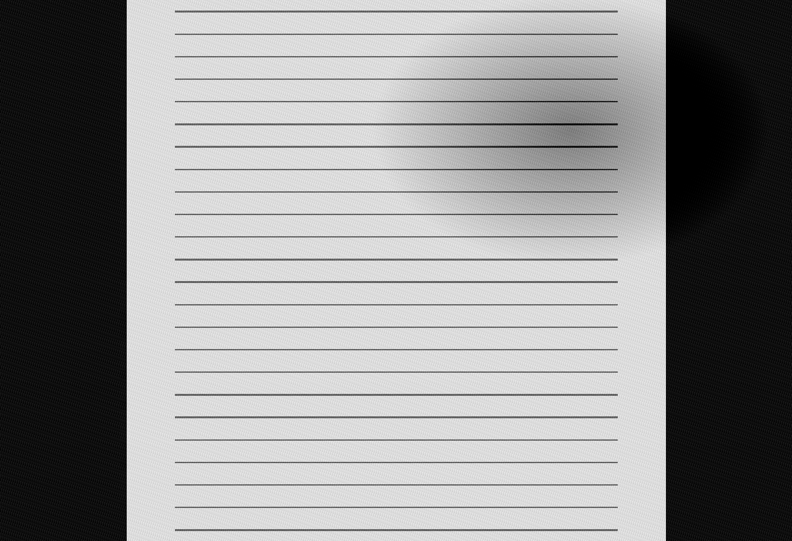

03 / Writing
Scripts, journals, and long-form thought.

Screenplays
Scenes, treatments, fragments, and completed drafts.
Journals
Personal field notes, process logs, travel entries, and daily observations.
Think Pieces
Essays on art, culture, image-making, media, and creative practice.